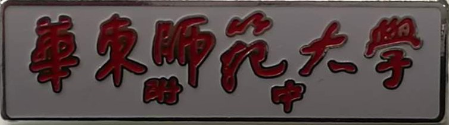

姐弟仨一齐上附中
曾经听附中的老教师们说起，一个家庭有多位子女都在附中求学——这也算得上一附中的一个“老传统”呢！
有时，老教师们会如数家珍地介绍：“某某是某某的哥哥，某某是某某的妹妹，我都教过的。”
是啊，一所好的学校，吸引了家里的兄弟姐妹“前赴后继”，真是自然不过的事呵！
不过，我家的情况还是有一点不同：有一年，我们姐弟三人是同时在一附中上学，这可有点难得哦！
记得太清楚了，1961年9月1日清晨，和煦的阳光下，小姐姐（吴月华62届高三甲）、小哥哥（吴国孚64届高三丙）和我（64届中三丙）三人背着书包，一齐从家里出发，经过闵行路到吴淞路，接着转入昆山路经过景灵堂、解放剧场、胜利电影院，再拐入武进路，最后从四川北路的一条小弄堂穿进去，到达我们心仪已久的母校——一附中。我们直觉得：一路和风、一路温暖，心中也充满了阳光……
这是开学的第一天。哥姐都办好了在学校食堂搭伙的手续，而我由于慢了一步，没有办成。食堂当天供应的是包子，姐弟三人就分享了二份午餐。
因为忙于各自的学业，三人结伴、一起上学的机会不多。但是，有时我们一起外出，或走亲访友，或逛街购物，或者就是一起去看一场电影，我们都会认真地佩戴好附中的校徽（就是“附中”两个小字，嵌在“华东师范大学”六个大字中间的那款），三人并排走在街上，引来路人关注、羡慕的目光，这时，正是我们引以为豪的时刻啊！
当时，有的学科（比如物理）教材多年不变。这时，我就不订购新书，宁愿使用哥姐用过的旧书。我很喜欢看他们在书上留下的圈圈点点、勾勾画画乃至片言只语，这是他们的心得和经验啊！哥姐留下的学习的足迹，时时提醒我时间的飞逝，勉励我更努力的学习。
有一次，在学校的泳池里游泳，偶遇丁明远老师。他用手抹一把脸上的水珠，突然冒出一句：“吴月华是你的姐姐呀？”我赶紧回答：“噢，是的。”丁老师若有所思，微微点了点头。
化学课是中三才开设的，姐姐这时已经毕业两年，早已离开了母校。但她曾是丁老师的化学课代表，丁老师还没有忘记她。
这以后，我对化学的学习，也更卖力气了……
半个世纪后的相聚
在班级几位热心同学的努力下，不断有一些“失联”的同学被找到。
初中毕业后，在外校就读高中的王自清同学，在与大家分别了半个多世纪以后，又回到了同学中间。
2015年5月23日，班级相约在上海大饭堂聚会。那天，师生30余人济济一堂，热情的握手、亲切的问候、真诚的祝福、愉快地叙旧，大家频频举杯、相互敬酒 ……
席间，我对王自清讲起了有关他的几件往事，引起周边同学的兴趣，下面与大家一起来分享。
其一
王自清自小就有点创新思维。他把自己的学号做成了一个LOGO。他把这个LOGO拿给小伙伴们看，声称：这个LOGO完全包含了从0到9十个数字。我和其他几位同学看了，觉得还真不错！
大家受到了启发，并延伸开去，把自己的名字组合成各种自己喜欢的图案。我也把自己的名字“画”成一枚待发的火箭状。
我问王自清还记得这事吗？他连连回答：“记得、记得”。
其二
初中时，大家对一些副课不大重视。有时，对副课还会有一点点厌烦。
一次，地理课前，为了应付老师的提问，临时抱佛脚，大家相互问一问上一堂课的内容。
这时，王自清微笑着，慢条斯理地说：“保加利亚的特产是玫瑰油”。
我感到有一些惊讶：这个细小的知识点，他也如此重视。
对我触动更大的是王自清讲这句话时的表情，我现在还记得，他的神情，仿佛是刚从保加利亚旅游回来，参加了保加利亚盛大的玫瑰节，和同学分享他的见闻！
唔，这才体现了一个学生对知识的热爱呀！
王自清听毕，笑了笑，说：“呵呵，玫瑰油是保加利亚的国宝啊！”
其三
当年，我曾经偶然在课桌上看到王自清有一本很精致的“黑面抄”。首页，用钢笔精心勾绘出一幅画：蓝天、白云，一辆飞驰的火车 ……
下面是一句勉励的话：加足水、加足煤、努力学习，奔向 ……
落款是：姐姐 王自操（这个“操”字比较潦草，看不大清）。
孩子的好奇和联想有时真有点不可思议。
我当时居然想起了：清华大学有个自控系，是不少男生心中的向往。那么“自操”和“自控”不是有着异曲同工之妙么？
我调侃王自清：喔哟哟，加足水、加足煤……
“哼，你看过我那本笔记了。”他说。
我问王自清：“你姐姐是不是叫‘王自操’？”
当时，不管我怎样问，王自清就是笑而不答。
这个问题，在过了半个多世纪以后，在聚会上又向王自清提了出来。
只见他哈哈大笑：“你的记性真好，我的姐姐确实叫王自操。”
这些往事，今天说来，还是那样趣味盎然、栩栩如生，它散发着浓浓的多彩的初中生活的气息！
潘漱中老师二、三事
初中时，聆听过潘老师讲解的课文《任弼时同志二、三事》，也练习过作文《* * * 的二、三事》。用同样的题目来写写自己的老师，一直是我心中的一个愿望，这也算是对师恩的一种回报吧！
记得，在初中的语文课堂上，潘老师把我们领进了一个美妙的散文王国。
那饱含浓郁春色的《茶花赋》；那犹如一幅美丽山水画的《泰山极顶》；那好一番神奇缥渺仙境的《海市》；那“咬啊咬啊，咬上几百年”的《雪浪花》；那喝上一口，“让你觉得生活都是甜的”《荔枝蜜》；那既是最平凡，却又是最崇高、最宝贵的《面包和盐》……杨朔，秦牧这些散文大家的作品深深地吸引着我们，潘老师还推荐了他们的几本散文集。我们是多么渴望能到这个散文王国里再深入地探个究竟！
当年，物质相当匮乏，一本书也是很宝贵的。我跑去向潘老师借杨朔的集子《雪浪花》（也有可能是秦牧的《艺海拾贝》），潘老师热情地说：“好啊，好啊，不过，现在这本书在上一届的同学欧阳靖那里，他借去有一段时间了，我去问问他，看好了没有。”
出乎我的意料，短短几天，潘老师就把书交到了我的手里。
潘老师办事认认真真，呵护每一个普通同学的学习热情，给我留下很深的印象。
我对作文的爱好、写作的能力主要是在初中阶段形成的。
入学后，写的第一篇作文题目是《开学第一天》，当时，真不知道怎么动笔，小学里怕的就是作文。 只记得当时，东拉一句，西扯一句，抓耳挠腮，还不时地点一点字数够不够……
第一篇作文得了 63分。它真实地反映了我的作文基础。
但是，随着潘老师的精心教学，情况渐渐发生了变化。初中三年，我对作文由“怕”转向了“爱”。
那一次，我的一篇作文《新书》破天荒第一次得到优秀。
更使我大为惊讶的是，随着作文的展开，潘老师写了好多好多旁批。对文中每一个细节都注意到了，对流露出来的点滴真情实感都给与充分的鼓励。（我曾撰文《想起了潘老师的语文课》，把潘老师当时写的旁批抄呈大家一阅。见2011.5《华光报》）
因为我的作文成绩一直平平，所以压根儿没有想到潘老师对我的作文居然会看得那么仔细！想到潘老师常有批改作文通宵达旦的情景，更使我感动不已。从此对作文越来越用心、越来越喜爱，成绩也一步步地提高。并时有被当作范文，在班上诵读。
64年夏，我们参加了中考，作文试题是《初中生活回忆》。
考后的某一天，潘老师特意走到我身边，问我中考作文写了些什么。我把自己的构思和选材仔细对老师说了一遍，他默默地听着，也不说什么……
后来，同班的W同学告诉我，潘老师跟他说起，我的中考作文成绩不高，潘老师非常惋惜，同时对评分也表示了不同的意见。
我听后，自愧有负老师的厚爱。以后就更加努力地写作，努力地学习。
多年后，自己也走上了教育工作岗位，搞的是理科。但一直保持着对语文的钟爱。
从90年代起，学校、班级举办了多次聚会。每次师生相聚，同学们都愿意把自己的开心事跟潘老师说说。
有一次，我跟潘老师说，我已经改行搞自己喜欢的计算机学科的教学，并调往教育学院担任教研员。潘老师听后，满面的欣慰，马上转过身去，对坐在另一边的林树清老师说：“哎，林老师，吴国焕当教研员唻。”话语间，流露出一股发自内心的喜悦。
此刻，我忽然觉得自己仿佛又回到了孩提时代，又一次感受到了那种小学生得到老师赏识、得到老师夸奖时的暖暖的感觉……
（本文2011.5刊登在华东师大一附中网站《校友天地》）

华东师大一附中校徽